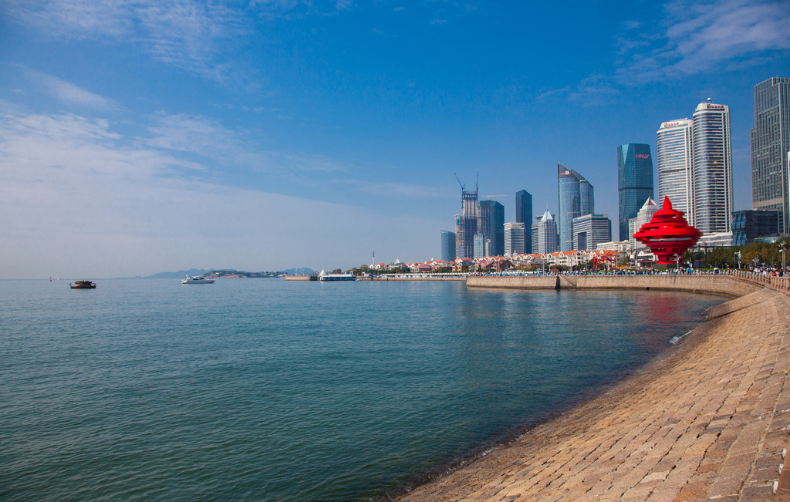
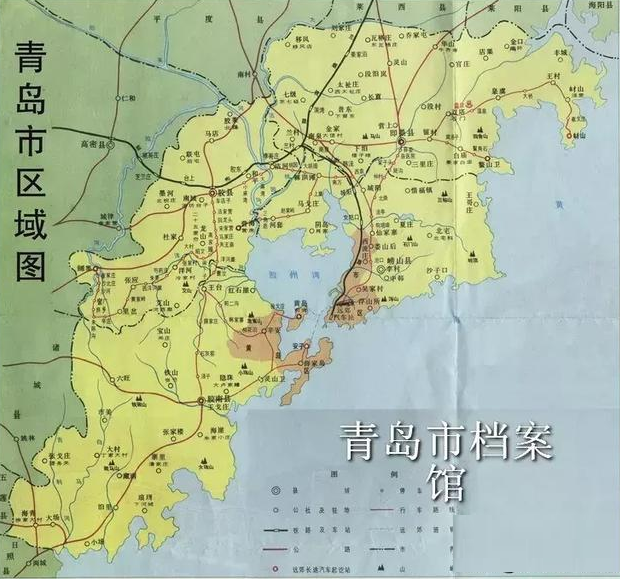

青岛城市规划研究：山海相依背景下的城市空间发展
美丽的青岛市
什么是 青岛市 !
青岛市在哪里

青岛城市的规划
古代的青岛城市

- 历史上，青岛辖域归属几经变化。新石器时代即有文明出现，属东夷部族。在史前及夏商时期的青岛辖域属莱夷之地，西周时代，属夷国，春秋初期分别为介国、夷国、莱国等的属地。春秋中期齐灭莱，青岛辖域开始通过齐国的统治归流于周，战国时期，青岛辖域大部归于齐之即墨邑管辖。越王勾践灭吴后舍会稽而徙都琅琊，后越国败于楚国，今青岛西海岸新区一带属楚国。
- 秦时，青岛辖域西部属全国48郡之琅琊郡，北部属胶东郡。 西汉时期，青岛辖域大致属胶东国、琅琊郡，现市区大部为不其县辖域。汉景帝刘启先后立其子刘彻、刘寄为胶东王，都城设在即墨。东汉光武帝时徙封大司徒阳都侯伏湛为不其侯。 三国时期，青岛地域属魏国青州，其中胶州湾东岸的不其等县属东莱郡，西部的黔陬、壮武等县属城阳郡。 西晋时，胶州湾东岸属青州长广郡、西岸属青州城阳郡，即墨县属北海国。 十六国时期，青岛地域隶属关系多变，大致先后分别属于后赵、前燕、前秦、后燕、南燕等国，系青州和徐州辖域。 南朝宋时，青岛地域大部属青州长广郡、北海郡、高密郡。 北朝北魏时，青岛地域以大沽河为界，东部大都属光州长广郡、西部大都属青州高密郡。 北齐、北周时，胶州湾东岸属光州长广郡、东莱郡，西岸属胶州高密郡、平昌郡。 隋开皇十六年（596年），置胶西县（原黔陬县）和琅琊县，均属密州；同年重建即墨县于今址，属莱州，不其县撤并于即墨。隋朝时平度为长广县，仁寿元年（601年），改称胶水县。炀帝大业三年（607年），将州一级改为郡，青岛地域属高密、东莱二郡。 唐代，青岛地域分属河南道莱州（东莱郡）和密州（高密郡）。唐高祖武德六年（623年），胶西县撤并入高密县。
- 五代十国时期，青岛地域先后属后梁、后唐、后晋、后汉、后周，仍为河南道莱州、密州管辖范围。 北宋时，青岛地域属京东东路莱州（胶水县、即墨县）、密州（胶西县）。宋哲宗元祐二年（1087年），复置胶西县，属密州 金朝势力南下后，域内各地被金所占，仍分属山东东路莱州和密州管辖。 元太祖二十二年（1227年），设胶州，辖胶西、即墨（至元二年撤即墨并入掖县和胶水县）、高密三县。元朝时，青岛地域主要属益都路胶州、莱州。 明朝时期，青岛地域主要属山东莱州府。洪武二年（1369年），撤销胶西县，改置胶州，辖即墨等二县，属莱州府。自明朝初年，明廷先后在青岛地域设立即墨营、灵山卫（下辖胶州所、夏河寨所等）、鳌山卫（下辖雄崖所、浮山所等）等卫所。洪武二十二年（1389年），撤胶水县改置平度州，与胶州、即墨县均属莱州府。 清朝时期，青岛地域大部属山东承宜布政使司莱州府之胶州、平度州
- 光绪十七年（1891年）6月14日，清政府在胶澳设防，青岛由此建置。翌年，调登州镇总兵章高元率部移驻胶澳。清光绪二十三年（1897年）11月14日，德国以“巨野教案”为借口侵占胶澳，胶澳沦为殖民地，山东也划入德国的势力范围。德国租借青岛后，以打造远东“模范殖民地”为目标，大规模投资经营建设青岛，先后建设了青岛港和胶济铁路，建设了青岛城区，使青岛在短短的十几年内就超越了已开埠37年的烟台，成为山东第一大商埠；同时，德国还通过胶济铁路和青岛港把整个山东纳入德国的势力范围 。
现代青岛城市规划
- 青岛是一座具有鲜明滨海特色的城市。城市依山临海，拥有胶州湾、崂山以及丰富的海岸线资源，同时也是我国重要的沿海中心城市、历史文化名城和现代海洋城市。长期以来，青岛的城市发展始终与海洋、港口、山地和产业空间密切相关。
- 进入新的发展阶段，青岛城市建设逐渐从以增量扩张为主的发展模式，转向更加重视空间品质、生态保护、城市更新和功能完善的发展模式。2024年11月，国务院正式批复《青岛市国土空间总体规划（2021—2035年）》，该规划成为青岛未来国土空间保护、开发、利用和修复的重要依据。
- 因此，研究青岛城市空间结构、生态环境、交通体系和城市更新，对于理解青岛未来的发展方向具有重要意义